Your screen,
in your language.
Raam swaps the words on your screen for your language, right where they were written, live, in any app.
Recognition and translation happen entirely on your phone. No account, no server, and it works offline.
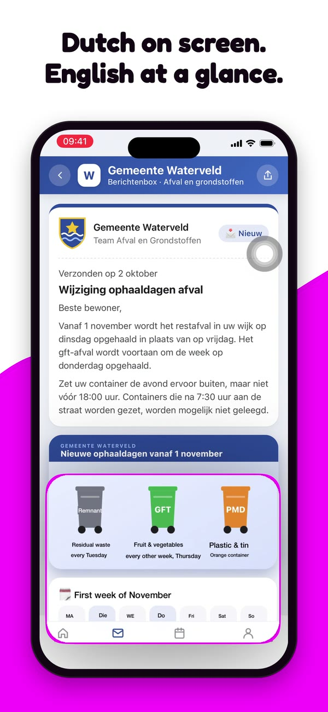
Raam for iPhone
Floats in Picture in Picture over any app. Beta on TestFlight, and on the App Store.
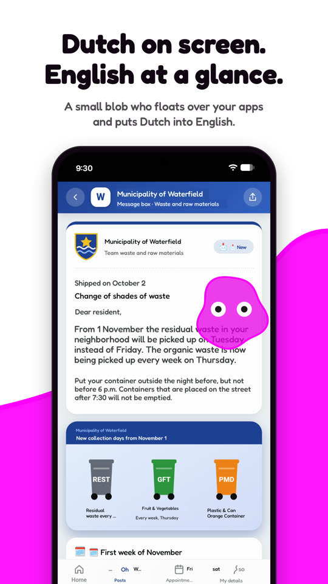
Raam for Android
Floats right over your apps. Beta on Google Play, open to anyone who joins.
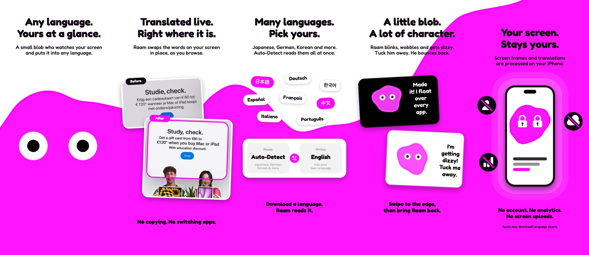
A new pose for every build
Each version of Raam draws its own icon, so no two builds look alike. Here's every pose he's struck so far.
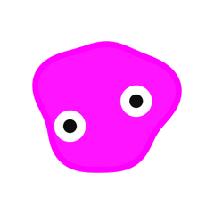
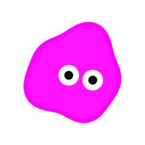
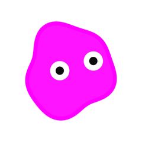
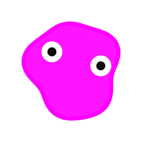
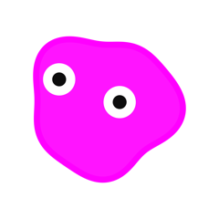
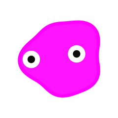
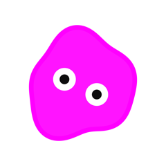
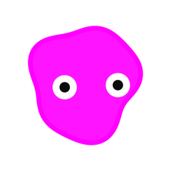
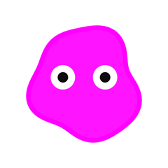
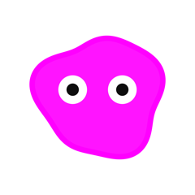
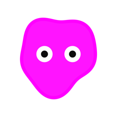
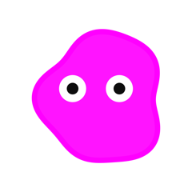
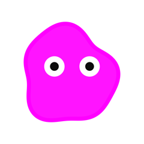
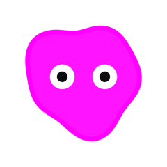